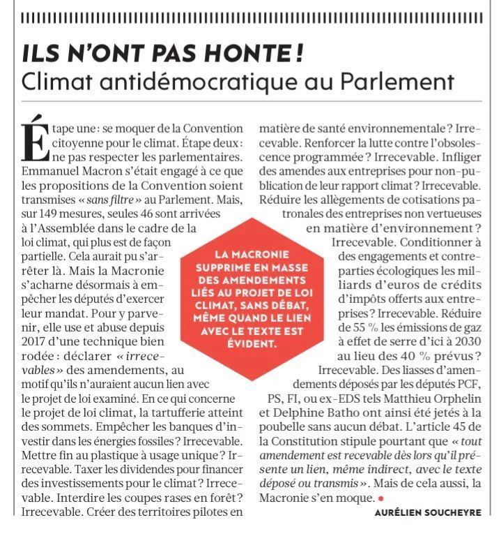

Publication d’archives
Convention Citoyenne pour le Climat
Date indiquée par Facebook · 9 mars 2021
Texte conservé avec la publication
Contexte du dossier
Le 9 mars 2021, la page critique le traitement des propositions de la Convention citoyenne pour le climat, en relayant un article d’Aurélien Soucheyre et un dessin de Besse dans L’Humanité. Elle souligne alors que seules 46 mesures sur 149 seraient arrivées au Parlement. Le 23 mars, elle annonce la marche niortaise du 28 mars, place des Halles. Puis, le 23 octobre, l’appel au rassemblement de Mauzé-sur-le-Mignon du 6 novembre demande l’arrêt immédiat des chantiers de méga-bassines. L’argument est explicite : l’agriculture utilise l’eau, mais cette ressource ne peut être réservée à quelques intérêts.

Sources
Archive rouge · export Facebook · AR-0002-FB-02058
À lire aussi · 5 et 6 janvier – Appel à mobilisation pour les procès de la résistance contre les bassines